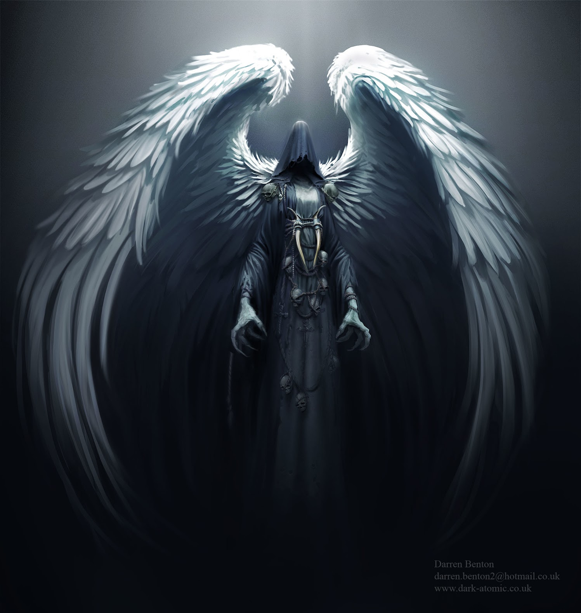

Death is the permanent cessation of all biological functions that sustain a living, physical organism. Death may refer to the end of life as either an event or condition. In many cultures and in the arts, death is considered a being or otherwise personified, wherein it is usually capitalized as "Death".
